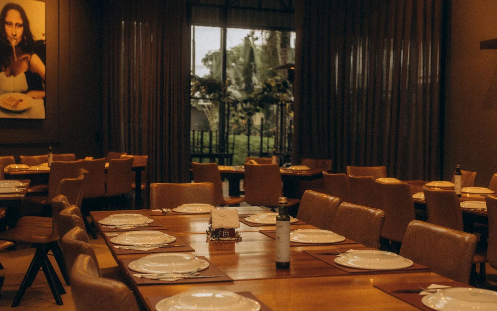
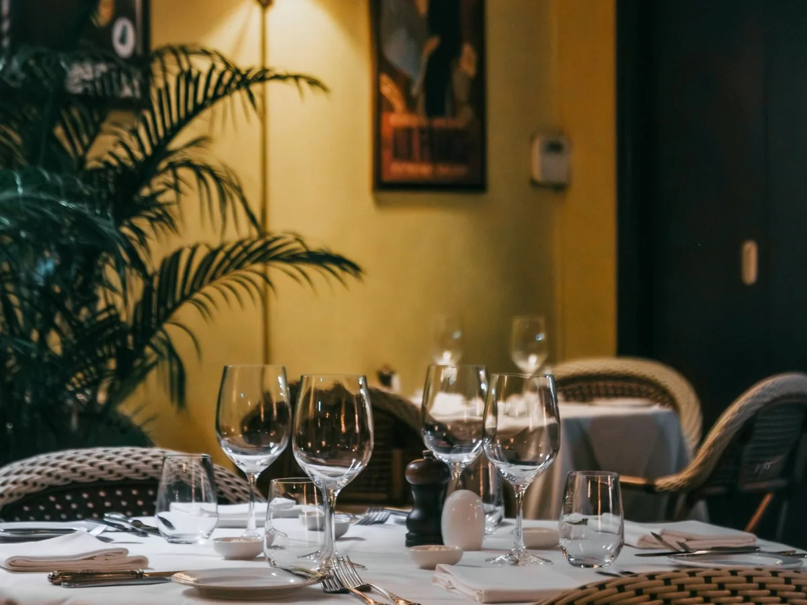

Страчателла и томаты
Томаты, базилик и оливковое масло.
Ресторан · Демо Reach & Form
Соберите ужин из сезонного меню, прикиньте бюджет и выберите время для встречи.

Томаты, базилик и оливковое масло.
Запечённая тыква, сливки и семечки.
Паста, белые грибы и пармезан.
Филе сибаса, травы и лимон.
Меренга, крем и сезонные ягоды.
Ягоды, содовая и лайм.

Откройте меню по категориям или попросите помощника подобрать блюда и посчитать стоимость ужина.
Стоковые фотографии иллюстрируют концепт.Помощник Reach & Form
Предложит сочетание блюд под повод, посчитает сумму по меню и откроет бронь.
Интерактивное демо с готовыми ответами.Выберите один из вопросов.
Да. В форме можно выбрать до четырёх гостей или вариант «5 и более». Для большой компании ресторан обычно подтверждает время отдельно.
Откройте помощника и выберите ужин вдвоём. Он покажет пример набора блюд и общую сумму по меню.
Краткий состав указан в меню. Если у вас аллергия, при реальном визите уточните ингредиенты у команды ресторана перед заказом.
Состав блюд и аллергены уточняйте у ресторана при реальном визите.
Навигация в демо
На карте показан городской ориентир для проверки маршрута. По этому адресу нет точки обслуживания Reach & Form.
Пешком по набережной до здания Морского вокзала.
Открыть на карте ↗Помощник предложит блюда под повод и рассчитает сумму по меню.
Выберите дату, время и количество гостей. Форма покажет итог выбора прямо на странице.